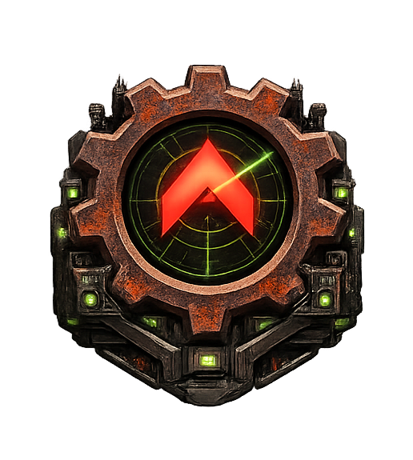

Iron Curtain — Design Documentation

Project: Rust-Native RTS Engine
Status: Pre-development (design phase) Date: 2026-02-19 Codename: Iron Curtain Author: David Krasnitsky
What This Is
A Rust-native RTS engine that supports OpenRA resource formats (.mix, .shp, .pal, YAML rules) and reimagines internals with modern architecture. Not a clone or port — a complementary project offering different tradeoffs (performance, modding, portability) with full OpenRA mod compatibility as the zero-cost migration path. OpenRA is an excellent project; IC explores what a clean-sheet Rust design can offer the same community.
Document Index
| # | Document | Purpose | Read When… |
|---|---|---|---|
| 01 | 01-VISION.md | Project goals, competitive landscape, why this should exist | You need to understand the project’s purpose and market position |
| 02 | 02-ARCHITECTURE.md | Core architecture: crate structure, ECS, sim/render split, game loop, install & source layout, RA experience recreation, first runnable plan, SDK/editor architecture | You need to make any structural or code-level decision |
| 02+ | architecture/gameplay-systems.md | Extended gameplay systems (RA1 module): power, construction, production, harvesting, combat, fog, shroud, crates, veterancy, superweapons | You’re implementing or reviewing a specific RA1 gameplay system |
| 03 | 03-NETCODE.md | Unified relay lockstep netcode, sub-tick ordering, adaptive run-ahead, NetworkModel trait | You’re working on multiplayer, networking, or the sim/network boundary |
| 03+ | netcode/match-lifecycle.md | Match lifecycle: lobby, loading, tick processing, pause, disconnect, desync, replay, post-game | You’re tracing the operational flow of a multiplayer match |
| 04 | 04-MODDING.md | YAML rules, Lua scripting, WASM modules, templating, resource packs, mod SDK | You’re working on data formats, scripting, or mod support |
| 04+ | modding/campaigns.md | Campaign system: branching graphs, persistent state, unit carryover, co-op | You’re designing or implementing campaign missions and branching logic |
| 04+ | modding/workshop.md | Workshop: federated registry, P2P distribution, semver deps, modpacks, moderation, creator reputation, Workshop API | You’re working on content distribution, Workshop features, mod publishing, or creator tools |
| 05 | 05-FORMATS.md | File formats, original source code insights, compatibility layer | You’re working on asset loading, ra-formats crate, or OpenRA interop |
| 06 | 06-SECURITY.md | Threat model, vulnerabilities, mitigations for online play | You’re working on networking, modding sandbox, or anti-cheat |
| 07 | 07-CROSS-ENGINE.md | Cross-engine compatibility, protocol adapters, reconciliation | You’re exploring OpenRA interop or multi-engine play |
| 08 | 08-ROADMAP.md | 36-month development plan with phased milestones | You need to plan work or understand phase dependencies |
| 09 | 09-DECISIONS.md | Decision index — links to 7 thematic sub-documents covering all 77 decisions | You need to find which sub-document contains a specific decision |
| 09a | decisions/09a-foundation.md | Decisions: language, framework, data formats, simulation invariants, core engine identity, crate extraction | You’re questioning or extending a core engine decision (D001–D003, D009, D010, D015, D017, D018, D039, D063, D064, D067, D076) |
| 09b | decisions/09b-networking.md | Decisions: network model, relay server, sub-tick ordering, community servers, ranked play, community server bundle | You’re working on networking or multiplayer decisions (D006–D008, D011, D012, D052, D055, D060, D074) |
| 09c | decisions/09c-modding.md | Decisions: scripting tiers, OpenRA compatibility, UI themes, mod profiles, licensing, export, selective install, Remastered format compat | You’re working on modding, theming, or compatibility decisions (D004, D005, D014, D023–D027, D032, D050, D051, D062, D066, D068, D075) |
| 09d | decisions/09d-gameplay.md | Decisions: pathfinding, balance, QoL, AI systems, render modes, trait-abstracted subsystems, asymmetric co-op, LLM exhibition modes, replay highlights | You’re working on gameplay mechanics or AI decisions (D013, D019, D021, D022, D028, D029, D033, D041–D045, D048, D054, D070, D073, D077) |
| 09e | decisions/09e-community.md | Decisions: Workshop, telemetry, SQLite, achievements, governance, premium content, profiles, data portability | You’re working on community platform or infrastructure decisions (D030, D031, D034–D037, D046, D049, D053, D061) |
| 09f | decisions/09f-tools.md | Decisions: LLM missions, scenario editor, asset studio, mod SDK, LLM config, foreign replay, skill library | You’re working on tools, editor, or LLM decisions (D016, D020, D038, D040, D047, D056, D057) |
| 09g | decisions/09g-interaction.md | Decisions: command console, communication (chat, voice, pings), tutorial/new player experience, installation setup wizard | You’re working on in-game interaction systems (D058, D059, D065, D069) |
| 10 | 10-PERFORMANCE.md | Efficiency-first performance philosophy, targets, profiling | You’re optimizing a system, choosing algorithms, or adding parallelism |
| 11 | 11-OPENRA-FEATURES.md | OpenRA feature catalog (~700 traits), gap analysis, migration mapping | You’re assessing feature parity or planning which systems to build next |
| 12 | 12-MOD-MIGRATION.md | Combined Arms mod migration, Remastered recreation feasibility | You’re validating modding architecture against real-world mods |
| 13 | 13-PHILOSOPHY.md | Development philosophy, game design principles, design review, lessons from C&C creators and OpenRA | You’re reviewing design/code, evaluating a feature, or resolving a design tension |
| 14 | 14-METHODOLOGY.md | Development methodology: stages from research through release, context-bounded work units, research rigor & AI-assisted design process, agent coding guidelines | You’re planning work, starting a new phase, understanding the research process, or onboarding as a new contributor |
| 15 | 15-SERVER-GUIDE.md | Server administration guide: configuration reference, deployment profiles, best practices for tournament organizers, community admins, and league operators | You’re setting up a relay server, running a tournament, or tuning parameters for a community deployment |
| 16 | 16-CODING-STANDARDS.md | Coding standards: file structure, commenting philosophy, naming conventions, error handling, testing patterns, code review checklist | You’re writing code, reviewing a PR, onboarding as a contributor, or want to understand the project’s code style |
| 17 | 17-PLAYER-FLOW.md | Player flow & UI navigation: every screen, menu, overlay, and navigation path from first launch through gameplay, UX principles, platform adaptations | You’re designing UI, implementing a screen, tracing how a player reaches a feature, or evaluating the UX |
LLM feature overview (optional / experimental): See Experimental LLM Modes & Plans for a consolidated overview of planned LLM gameplay modes, creator tooling, and external-tool integrations. The project is fully designed to work without any LLM configured.
Key Architectural Invariants
These are non-negotiable across the entire project:
- Simulation is pure and deterministic. No I/O, no floats, no network awareness. Takes orders, produces state. Period.
- Network model is pluggable via trait.
GameLoop<N: NetworkModel, I: InputSource>is generic over both network model and input source. The sim has zero imports fromic-net. They share onlyic-protocol. Within the lockstep family (all shipping implementations), swapping network backends touches zero sim code. Non-lockstep architectures (rollback, FogAuth) would also leaveic-simuntouched but may require game loop extension inic-game. - Modding is tiered. YAML (data) → Lua (scripting) → WASM (power). Each tier is optional and sandboxed.
- Bevy as framework. ECS scheduling, rendering, asset pipeline, audio — Bevy handles infrastructure so we focus on game logic. Custom render passes and SIMD only where profiling justifies it.
- Efficiency-first performance. Better algorithms, cache-friendly ECS, zero-allocation hot paths, simulation LOD, amortized work — THEN multi-core as a bonus layer. A 2-core laptop must run 500 units smoothly.
- Real YAML, not MiniYAML. Standard
serde_yamlwith inheritance resolved at load time. - OpenRA compatibility is at the data/community layer, not the simulation layer. Same mods, same maps, shared server browser — but not bit-identical simulation.
- Full resource compatibility with Red Alert and OpenRA. Every .mix, .shp, .pal, .aud, .oramap, and YAML rule file from the original game and OpenRA must load correctly. This is non-negotiable — the community’s existing work is sacred.
- Engine core is game-agnostic. No game-specific enums, resource types, or unit categories in engine core. Positions are 3D (
WorldPos { x, y, z }). System pipeline is registered per game module, not hardcoded. - Platform-agnostic by design. Input is abstracted behind
InputSourcetrait. UI layout is responsive (adapts to screen size viaScreenClass). No rawstd::fs— all assets go through Bevy’s asset system. Render quality is runtime-configurable.
Crate Structure Overview
iron-curtain/
├── ra-formats # Wraps cnc-formats + EA-derived code; Bevy asset integration; MiniYAML auto-conversion pipeline (C&C-specific, keeps ra- prefix)
├── ic-protocol # PlayerOrder, TimestampedOrder, OrderCodec trait (SHARED boundary)
├── ic-sim # Deterministic simulation (Bevy FixedUpdate systems)
├── ic-net # NetworkModel trait + implementations; RelayCore library (no ic-sim dependency)
├── ic-render # Isometric rendering, shaders, post-FX (Bevy plugin)
├── ic-ui # Game chrome: sidebar, minimap, build queue (Bevy UI)
├── ic-editor # SDK: scenario editor, asset studio, campaign editor, Game Master mode (D038+D040, Bevy app)
├── ic-audio # .aud playback, EVA, music (Bevy audio plugin)
├── ic-script # Lua + WASM mod runtimes
├── ic-ai # Skirmish AI, mission scripting, LLM-enhanced AI strategies (depends on ic-llm)
├── ic-llm # LlmProvider trait, prompt infra, skill library, Tier 1 CPU inference (traits + infra only — no ic-sim)
├── ic-paths # Platform path resolution: data dirs, portable mode, credential store
├── ic-game # Top-level Bevy App, ties all game plugins together (NO editor code)
└── ic-server # Unified server binary (D074): depends on ic-net (RelayCore) + optionally ic-sim (for FogAuth/relay-headless deployments)
License
All files in src/ and research/ are licensed under CC BY-SA 4.0. Engine source code is licensed under GPL v3 with an explicit modding exception (D051).
Trademarks
Red Alert, Tiberian Dawn, Command & Conquer, and C&C are trademarks of Electronic Arts Inc. Iron Curtain is not affiliated with, endorsed by, or sponsored by Electronic Arts.